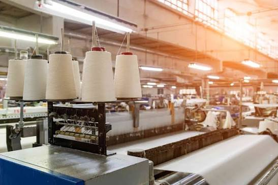
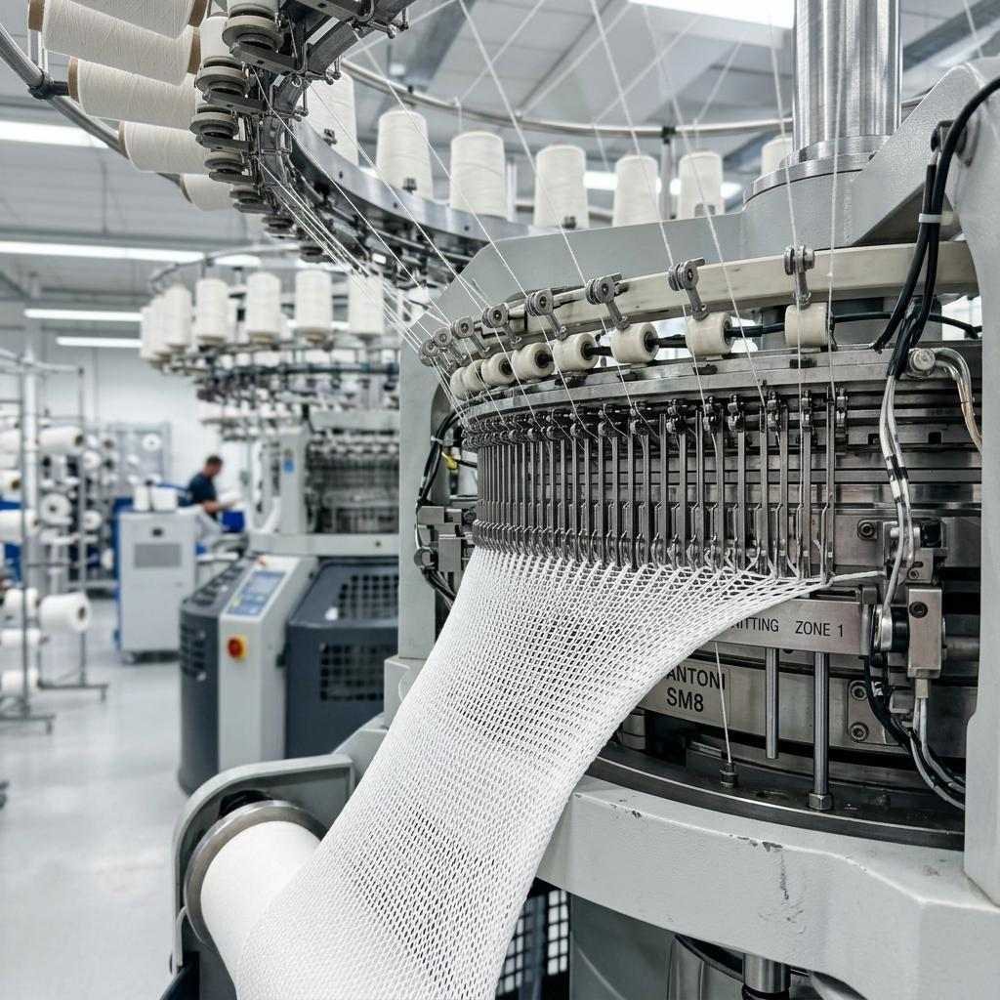
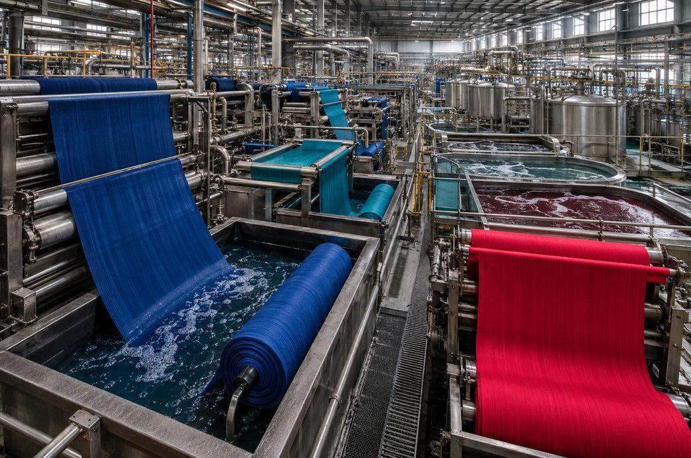
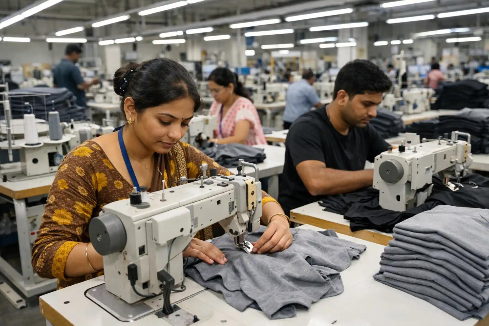

Manufacturing
Turning cotton yarn into a T-shirt

After processing, cotton yarn is sent to textile factories where it is turned into fabric. The fabric is then dyed, cut and sewn into a finished T-shirt. This stage involves machinery, workers, water, electricity and other materials.
🏭 Key Facts
- Cotton yarn can be knitted or woven into fabric.
- Fabric is dyed or printed to achieve different colours and designs.
- Machines cut fabric into pieces that form the T-shirt.
- Workers or automated machines sew the pieces together.
- Manufacturing requires energy, water and sometimes chemicals.
How a T-shirt Is Manufactured
The yarn passes through several operations before becoming a finished garment.

Fabric Making
Cotton yarn is knitted or woven together to create large sheets of fabric.

Dyeing and Finishing
The fabric is dyed or printed to give it colour and patterns. It may also be treated to improve its texture and appearance.

Cutting and Sewing
Fabric is cut into the required shapes and sewn together to produce the finished T-shirt.
What Happens Next?
Once the T-shirt is completed and packaged, it is transported to warehouses, shops and customers in different parts of the world.
Continue to Transportation →